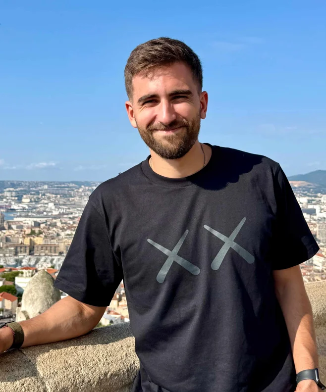

RL Dynamic Pricing
A stochastic pricing simulator and a PyTorch DQN, evaluated against fixed-price and heuristic baselines under changing demand.
More about this project
Hello 👋! I’m a computer scientist based in Paris. I completed my PhD at Sorbonne University, focusing on algorithms under uncertainty.
My research explores how algorithms can benefit from machine learning predictions and still perform well when those predictions are wrong. I also enjoy working on personal projects — you can find a few below.
Learning-augmented algorithms, robust optimization, and decision-making under uncertainty.
Algorithms Under Uncertainty: Robust Methods and Decision-Theoretic Evaluation
PhD Thesis, Sorbonne University, 2025. [pdf,
slides]
A 4/3OPT + 2/3 Approximation for big two-bar charts packing problem
with Adil Erzin, Alexander Kononov, and Stepan Nazarenko. Journal of Mathematical Sciences, 2023.
[paper]
A Posteriori Analysis of the Algorithms for Two-Bar Charts Packing Problem
with Adil Erzin, Stepan Nazarenko, and Roman Plotnikov. Advances in Optimization and Applications. OPTIMA 2021.
[paper,
slides]
A 3/2-approximation for big two-bar charts packing
with Adil Erzin, Stepan Nazarenko, and Roman Plotnikov. Journal of Combinatorial Optimization, 2021.
[paper]
Two-Bar Charts Packing Problem
with Adil Erzin, Stepan Nazarenko, and Roman Plotnikov. Optimization Letters, 2020.
[paper]
Optimal Investment in the Development of Oil and Gas Field
with Adil Erzin, Roman Plotnikov, Alexei Korobkin, and Stepan Nazarenko. Mathematical Optimization Theory and Operations Research. MOTOR 2020.
[paper,
slides]
A stochastic pricing simulator and a PyTorch DQN, evaluated against fixed-price and heuristic baselines under changing demand.
More about this projectTennis match prediction and tournament simulation, combining Elo and ranking features, similar-match retrieval, and contextual analysis agents.
More about this projectPhD Researcher · Operations Research
I researched learning-augmented algorithms and robust optimization. My work involved designing and analysing algorithms, running experiments to compare their performance, writing papers with collaborators, and presenting our results in talks.
Algorithm Development · Alongside Master’s studies
Developed optimization heuristics for gas processing and transport networks subject to operational constraints.
Data Science Intern · Novosibirsk
Used Python and NLP to predict a structured banking-transaction field, from preprocessing and feature extraction through classification and evaluation.
Co-founder & Managing Director · Novosibirsk
Managed pricing, budgets, capacity, and daily operations, working directly with customers and staff to understand service needs and resolve operational problems.
I hold a PhD in Computer Science from Sorbonne University, where I worked in the Operations Research group at LIP6 under the supervision of Spyros Angelopoulos and Christoph Dürr.
Before moving to Paris, I completed my Bachelor’s and Master’s degrees in Applied Mathematics and Informatics at Novosibirsk State University under the supervision of Adil Erzin. I’m grateful for his guidance, which helped shape my interest in algorithms and optimization.
I enjoy testing assumptions, turning ideas into code, and explaining results clearly.
PhD, Computer Science
Sorbonne University / LIP6 · 2022–2025
MSc & BSc, Applied Mathematics and Informatics
Novosibirsk State University · 2016–2022
Robust and combinatorial optimization, simulation, feature engineering, embeddings, retrieval, and reproducible experiments.
English (fluent) · French (intermediate) · Russian (native)
Member of ANR Predictions: Algorithms with Predictions, starting in October 2023.
Previously: “The most useful and promising research” award at the Sobolev Institute of Mathematics competition for my talk on the Two-Bar Charts Packing Problem (2021).
I train CrossFit and also enjoy running, cycling, and swimming. Each has its charm, although CrossFit probably wins when it comes to making me question my life choices during a workout. I’d like to try a triathlon someday; for now, I’m working on the three disciplines separately. You can find some of my activities on Strava.
Feel free to reach out if you’d like to talk about research, projects, or sports. Let’s talk.